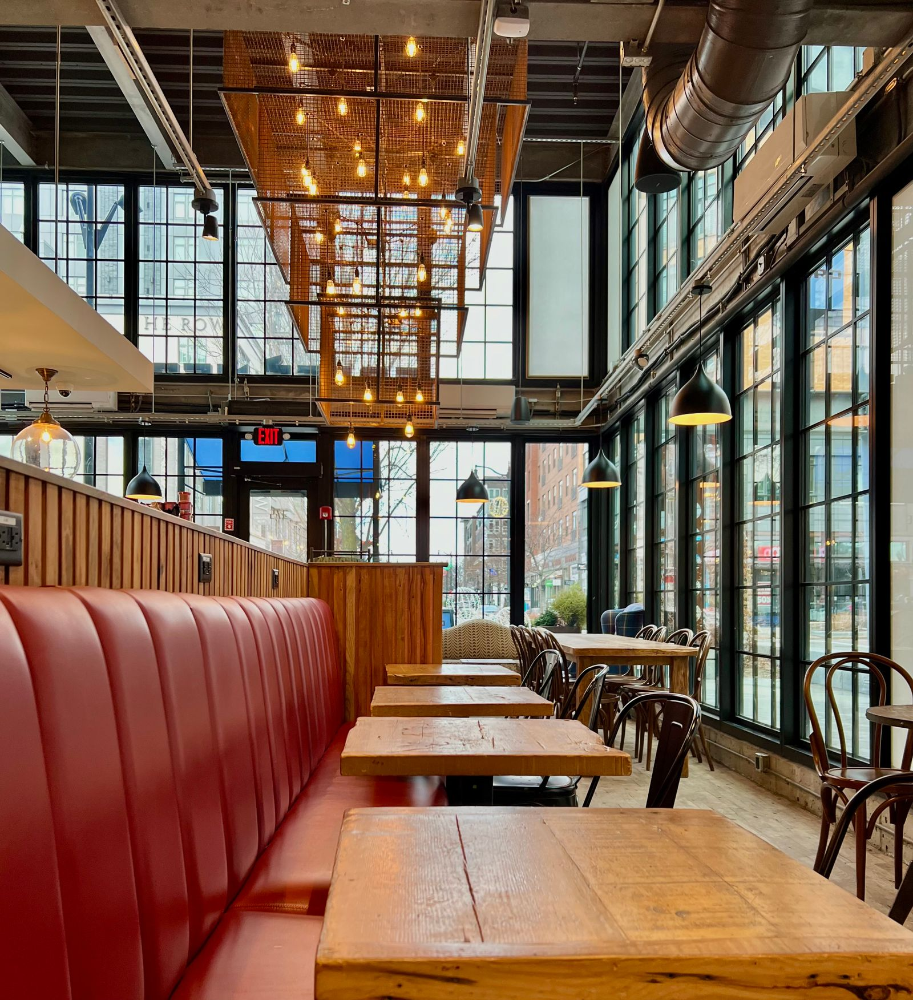

Санкт-Петербург · Европейская · ₽₽
BaT
Мягкий свет, натуральное дерево и тихий двор за окном. Здесь удобно встретиться за ужином и никуда не торопиться.
Литейный проспект, 28



Санкт-Петербург · Европейская · ₽₽
Мягкий свет, натуральное дерево и тихий двор за окном. Здесь удобно встретиться за ужином и никуда не торопиться.
Литейный проспект, 28
